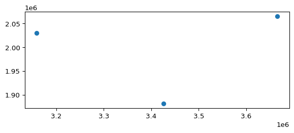

import geopandas as gpd
from shapely.geometry import PointGeoPandas
In urban analysis, working with spatial data often means handling numerous geographic features simultaneously, such as buildings, streets, or administrative boundaries. While processing each feature individually is possible, it’s considerably more efficient to manage and analyse them collectively within a structured format.
For general data analysis in Python, the pandas library is the standard tool. Pandas provides the DataFrame, a powerful table-like structure where rows represent observations (e.g., individual buildings) and columns store their attributes (e.g., height, area, land use). This structure is conceptually similar to attribute tables found in GIS software such as QGIS or ArcGIS.
GeoPandas extends pandas by incorporating first-class support for geographic data. It introduces the GeoDataFrame, which is effectively a pandas DataFrame enhanced with a dedicated column for storing geometry objects (such as points, lines, or polygons). This integration allows you to seamlessly combine tabular data analysis with spatial operations.
Key features of GeoPandas include:
- Storing geometric data alongside other attributes.
- Reading and writing various spatial file formats (Shapefile, GeoPackage, GeoJSON, etc.).
- Performing spatial operations (buffering, intersection, union, etc.).
- Handling Coordinate Reference Systems (CRS).
- Easy plotting of spatial data.
From Scratch
Although you’ll frequently load spatial data directly from files, knowing how to create a GeoDataFrame manually is beneficial. To do this, you typically need:
- Tabular data (like a list of dictionaries or a pandas DataFrame).
- Corresponding geometry objects.
- A Coordinate Reference System (CRS) identifier.
Let’s begin with a simple example.
First, we’ll define some tabular data as a list of dictionaries. Each dictionary will represent a city, storing its name and approximate coordinates (longitude, latitude).
data = [
{"city": "Madrid", "x": -3.7038, "y": 40.4168},
{"city": "Barcelona", "x": 2.1734, "y": 41.3851},
{"city": "Valencia", "x": -0.3774, "y": 39.4699}
]
data[{'city': 'Madrid', 'x': -3.7038, 'y': 40.4168},
{'city': 'Barcelona', 'x': 2.1734, 'y': 41.3851},
{'city': 'Valencia', 'x': -0.3774, 'y': 39.4699}]Next, we need to create the corresponding geometry objects. As these are coordinates, Point objects are suitable. We can generate a list of Point objects directly from our data.
# Create Point geometries from the x and y columns
locations = []
for city in data:
locations.append(Point(city["x"], city["y"]))
locations[<POINT (-3.704 40.417)>, <POINT (2.173 41.385)>, <POINT (-0.377 39.47)>]With the tabular data and geometry prepared, the final component is the CRS. Given that the coordinates are longitude and latitude, the appropriate CRS is WGS 84, identified by the EPSG code 4326.
We can now construct the GeoDataFrame:
gdf_cities = gpd.GeoDataFrame(
data, # The tabular data
geometry=locations, # The Shapely geometry objects
crs="EPSG:4326" # Coordinate Reference System (WGS 84)
)
gdf_cities| city | x | y | geometry | |
|---|---|---|---|---|
| 0 | Madrid | -3.7038 | 40.4168 | POINT (-3.7038 40.4168) |
| 1 | Barcelona | 2.1734 | 41.3851 | POINT (2.1734 41.3851) |
| 2 | Valencia | -0.3774 | 39.4699 | POINT (-0.3774 39.4699) |
Notice that GeoPandas automatically recognised the geometry list as the active geometry column. (You can also specify a different column name if needed.)
Indexing
Similar to pandas DataFrames, GeoDataFrames possess an index. By default, this is a range of integers. You can assign a more meaningful index using one of the columns (e.g., the city name) with the set_index() method. This often simplifies data selection.
gdf_cities = gdf_cities.set_index("city")
gdf_cities| x | y | geometry | |
|---|---|---|---|
| city | |||
| Madrid | -3.7038 | 40.4168 | POINT (-3.7038 40.4168) |
| Barcelona | 2.1734 | 41.3851 | POINT (2.1734 41.3851) |
| Valencia | -0.3774 | 39.4699 | POINT (-0.3774 39.4699) |
You can access a row using its index. Pandas provides a special indexing method, loc[], which allows you to access rows by their index label. This is especially useful when you’ve set a meaningful index, such as city names.
gdf_cities.loc["Madrid"]x -3.7038
y 40.4168
geometry POINT (-3.7038 40.4168)
Name: Madrid, dtype: objectYou can also specify a column name. For instance, to retrieve the latitude of Barcelona:
gdf_cities.loc['Barcelona', "y"]np.float64(41.3851)To retrieve all rows for a specific column, use the : operator. For example, to get all rows for the y column:
gdf_cities.loc[:, "y"]city
Madrid 40.4168
Barcelona 41.3851
Valencia 39.4699
Name: y, dtype: float64A particularly powerful feature of GeoDataFrames is the ability to filter rows based on their properties. To do this, you create a boolean mask, which can then be used to exclude rows you are not interested in. For instance, if you want to filter the cities to include only those with a latitude greater than 40, you can proceed as follows:
# Create a boolean mask
mask = gdf_cities["y"] > 40
maskcity
Madrid True
Barcelona True
Valencia False
Name: y, dtype: boolThis mask is a pandas Series of boolean values, where True indicates that the condition (y > 40) is met, and False indicates it is not. You can now apply this mask to filter the rows in the original GeoDataFrame.
# Use the mask to filter the rows
gdf_cities.loc[mask]| x | y | geometry | |
|---|---|---|---|
| city | |||
| Madrid | -3.7038 | 40.4168 | POINT (-3.7038 40.4168) |
| Barcelona | 2.1734 | 41.3851 | POINT (2.1734 41.3851) |
As shown, only two rows are returned because Valencia, the third city, has a latitude below 40.
Geospatial
GeoDataFrames possess special properties stemming from their spatial nature.
For instance, GeoPandas is aware of which column contains the spatial data. You can access this column directly using the .geometry attribute, which returns a GeoSeries.
gdf_cities.geometrycity
Madrid POINT (-3.7038 40.4168)
Barcelona POINT (2.1734 41.3851)
Valencia POINT (-0.3774 39.4699)
Name: geometry, dtype: geometrySimilarly, it knows the CRS, accessible via the .crs attribute.
gdf_cities.crs<Geographic 2D CRS: EPSG:4326>
Name: WGS 84
Axis Info [ellipsoidal]:
- Lat[north]: Geodetic latitude (degree)
- Lon[east]: Geodetic longitude (degree)
Area of Use:
- name: World.
- bounds: (-180.0, -90.0, 180.0, 90.0)
Datum: World Geodetic System 1984 ensemble
- Ellipsoid: WGS 84
- Prime Meridian: GreenwichGeoPandas conveniently integrates with matplotlib for straightforward plotting. Calling .plot() on a GeoDataFrame will render its geometries.
gdf_cities.plot()Coordinate Transformations
GeoPandas makes CRS transformation straightforward with the to_crs() method. Ensure you use a projected coordinate reference system when performing detailed spatial analysis. Let’s convert our cities GeoDataFrame to EPSG:3035, a projected equal-area CRS suitable for Europe (ETRS89-LAEA).
gdf_cities_proj = gdf_cities.to_crs(3035)
gdf_cities_proj| x | y | geometry | |
|---|---|---|---|
| city | |||
| Madrid | -3.7038 | 40.4168 | POINT (3159390.356 2029850.92) |
| Barcelona | 2.1734 | 41.3851 | POINT (3664996.992 2065549.826) |
| Valencia | -0.3774 | 39.4699 | POINT (3426003.188 1881060.49) |
Notice how the x and y columns no longer match the geometry, as the geometry is now in metres according to EPSG:3035. The .crs attribute reflects this change:
gdf_cities_proj.crs<Projected CRS: EPSG:3035>
Name: ETRS89-extended / LAEA Europe
Axis Info [cartesian]:
- Y[north]: Northing (metre)
- X[east]: Easting (metre)
Area of Use:
- name: Europe - European Union (EU) countries and candidates. Europe - onshore and offshore: Albania; Andorra; Austria; Belgium; Bosnia and Herzegovina; Bulgaria; Croatia; Cyprus; Czechia; Denmark; Estonia; Faroe Islands; Finland; France; Germany; Gibraltar; Greece; Hungary; Iceland; Ireland; Italy; Kosovo; Latvia; Liechtenstein; Lithuania; Luxembourg; Malta; Monaco; Montenegro; Netherlands; North Macedonia; Norway including Svalbard and Jan Mayen; Poland; Portugal including Madeira and Azores; Romania; San Marino; Serbia; Slovakia; Slovenia; Spain including Canary Islands; Sweden; Switzerland; Türkiye (Turkey); United Kingdom (UK) including Channel Islands and Isle of Man; Vatican City State.
- bounds: (-35.58, 24.6, 44.83, 84.73)
Coordinate Operation:
- name: Europe Equal Area 2001
- method: Lambert Azimuthal Equal Area
Datum: European Terrestrial Reference System 1989 ensemble
- Ellipsoid: GRS 1980
- Prime Meridian: GreenwichPlotting the transformed data shows the locations relative to the new projected coordinate system.
gdf_cities_proj.plot()
Spatial Operations
GeoPandas enables you to apply spatial operations directly to GeoDataFrames or GeoSeries. These operations are applied element-wise.
For instance, to create a 100km buffer around each city:
# The buffer distance is in the units of the CRS (metres for EPSG:3035)
gdf_cities_proj["geometry"] = gdf_cities_proj.geometry.buffer(100000) # 100km buffer
gdf_cities_proj.plot()
Alternatively, you can calculate the distance from each feature in a GeoDataFrame to a single Shapely geometry object. Let’s determine the distance from each city buffer to a specific point (also defined in EPSG:3035 coordinates):
# Define a point in the same CRS (EPSG:3035)
pt = Point(3300000, 2000000)
# Calculate distance from each geometry in the GeoSeries to the point
gdf_cities_proj.geometry.distance(pt)city
Madrid 43770.428827
Barcelona 270860.150569
Valencia 73357.551677
dtype: float64Creating and Updating Columns
Creating or updating column values in a DataFrame is straightforward.
For example, if we wished to create a new column named ‘easting’ and assign it the x-coordinate of the geometry, we could proceed as follows:
gdf_cities_proj['easting'] = gdf_cities_proj.geometry.centroid.x
gdf_cities_proj| x | y | geometry | easting | |
|---|---|---|---|---|
| city | ||||
| Madrid | -3.7038 | 40.4168 | POLYGON ((3259390.356 2029850.92, 3258908.829 ... | 3.159390e+06 |
| Barcelona | 2.1734 | 41.3851 | POLYGON ((3764996.992 2065549.826, 3764515.465... | 3.664997e+06 |
| Valencia | -0.3774 | 39.4699 | POLYGON ((3526003.188 1881060.49, 3525521.661 ... | 3.426003e+06 |
Each geometry row in the DataFrame is a Shapely geometry, so you can use standard Shapely syntax to access properties such as the centroid or its x-coordinate.
If you decide instead to update the existing x and y columns, you can reference them directly:
gdf_cities_proj['x'] = gdf_cities_proj.geometry.centroid.x
gdf_cities_proj['y'] = gdf_cities_proj.geometry.centroid.y
gdf_cities_proj| x | y | geometry | easting | |
|---|---|---|---|---|
| city | ||||
| Madrid | 3.159390e+06 | 2.029851e+06 | POLYGON ((3259390.356 2029850.92, 3258908.829 ... | 3.159390e+06 |
| Barcelona | 3.664997e+06 | 2.065550e+06 | POLYGON ((3764996.992 2065549.826, 3764515.465... | 3.664997e+06 |
| Valencia | 3.426003e+06 | 1.881060e+06 | POLYGON ((3526003.188 1881060.49, 3525521.661 ... | 3.426003e+06 |
DataFrames offer an extensive variety of useful methods; here, we will use the drop method to remove the column we no longer wish to retain:
gdf_cities_proj = gdf_cities_proj.drop(columns=['easting'])
gdf_cities_proj| x | y | geometry | |
|---|---|---|---|
| city | |||
| Madrid | 3.159390e+06 | 2.029851e+06 | POLYGON ((3259390.356 2029850.92, 3258908.829 ... |
| Barcelona | 3.664997e+06 | 2.065550e+06 | POLYGON ((3764996.992 2065549.826, 3764515.465... |
| Valencia | 3.426003e+06 | 1.881060e+06 | POLYGON ((3526003.188 1881060.49, 3525521.661 ... |
Working with Data
Reading Data
GeoPandas can read various spatial data formats, such as Shapefiles, GeoPackages, and GeoJSON files. The read_file() function is the primary method for this. Note that the file path in the example below must be adjusted to point to the actual location of the file on your computer.
mad_bldgs = gpd.read_file('../data/madrid_buildings/madrid_bldgs.gpkg')
mad_bldgs.head()| mean_height | area | perimeter | compactness | orientation | volume | floor_area_ratio | form_factor | corners | shape_index | fractal_dimension | geometry | |
|---|---|---|---|---|---|---|---|---|---|---|---|---|
| 0 | NaN | 187.418714 | 58.669276 | 0.491102 | 40.235999 | NaN | NaN | NaN | 4 | 0.700787 | 1.026350 | POLYGON ((448688.642 4492911, 448678.351 44928... |
| 1 | 7.0 | 39.082821 | 26.992208 | 0.472874 | 10.252128 | 273.579749 | 78.165643 | 5.410857 | 4 | 0.687658 | 1.041691 | POLYGON ((440862.665 4482604.017, 440862.64 44... |
| 2 | 7.0 | 39.373412 | 27.050303 | 0.475086 | 10.252128 | 275.613883 | 78.746824 | 5.400665 | 4 | 0.689265 | 1.040760 | POLYGON ((440862.681 4482608.269, 440862.665 4... |
| 3 | 7.5 | 37.933979 | 26.739878 | 0.464266 | 10.252129 | 284.504846 | 75.867959 | 5.513124 | 4 | 0.681371 | 1.045072 | POLYGON ((440862.705 4482612.365, 440862.681 4... |
| 4 | 7.0 | 39.013701 | 26.972641 | 0.472468 | 10.183618 | 273.095907 | 78.027402 | 5.412350 | 4 | 0.687363 | 1.041798 | POLYGON ((440880.29 4482607.963, 440880.274 44... |
The head() method shows the first few rows of the GeoDataFrame, including the geometry column. The CRS is automatically detected and set.
Plotting
Let’s plot the data.
mad_bldgs.plot()To zoom in when plotting, you can set your x and y-axis limits. For a cleaner plot, it is also generally preferable to turn off the axes so that the coordinates do not render.
ax = mad_bldgs.plot()
ax.set_xlim(439000, 442000)
ax.set_ylim(4473000, 4476000)
ax.axis('off')(np.float64(439000.0),
np.float64(442000.0),
np.float64(4473000.0),
np.float64(4476000.0))
Let’s create a new column named area, which we will set to the value of each geometry’s area. Then, we will plot the data again, this time rendering the colour according to the building’s area.
mad_bldgs['area'] = mad_bldgs.geometry.area
ax = mad_bldgs.plot(
column='area',
cmap='viridis',
vmax=10000,
)
ax.set_xlim(439000, 442000)
ax.set_ylim(4473000, 4476000)
ax.axis('off')(np.float64(439000.0),
np.float64(442000.0),
np.float64(4473000.0),
np.float64(4476000.0))Saving Data
GeoPandas can save GeoDataFrames to various formats, including Shapefiles, GeoPackages, and GeoJSON files. The to_file() method is used for this purpose. You can specify the format using the driver parameter.
mad_bldgs.to_file('bldgs_w_area.gpkg', driver='GPKG')